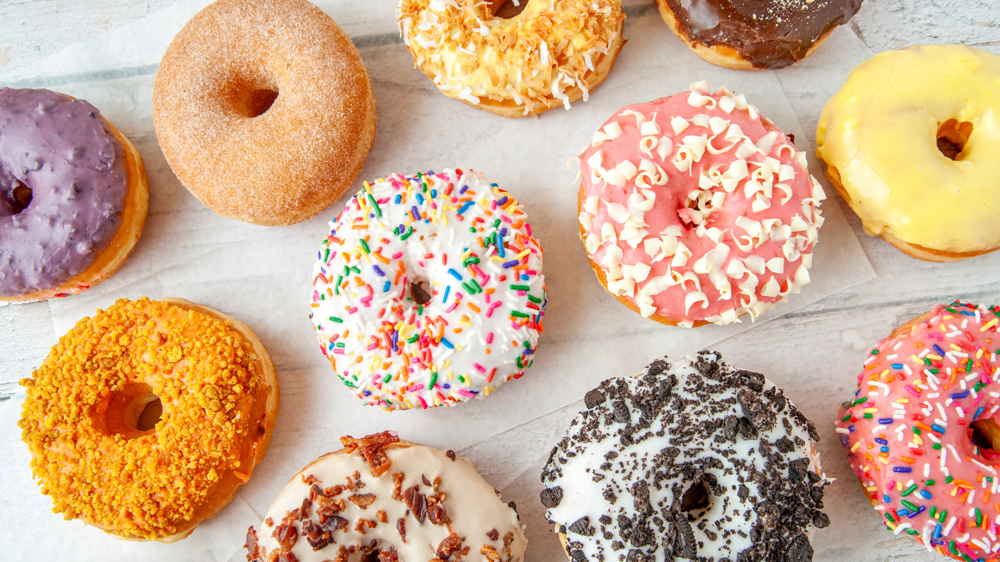

Slow Fermentation
Our yeast dough rests and ferments in temperature-controlled proofing chambers to develop a delicate, open crumb structure and deep, buttery aroma before frying.
At Yummm Donuts, we believe there is no substitute for authentic baking discipline. We never cut corners with frozen factory dough or pre-mixed powders. Every batch begins in the pre-dawn hours with unbleached flour, real butter, slow yeast proofing, and precise frying.

How we achieve that iconic cloud-like texture and melt-in-your-mouth glaze.
Our yeast dough rests and ferments in temperature-controlled proofing chambers to develop a delicate, open crumb structure and deep, buttery aroma before frying.
Every ring, bar, and donut hole is rolled out on flour-dusted marble baker tables and hand-cut with artisan precision to preserve the gentle air bubbles inside the dough.
Fried in clean, high-grade vegetable oil calibrated to exact temperatures. This flash-fries the outer crust to a light golden hue while keeping the interior fluffy, never greasy.